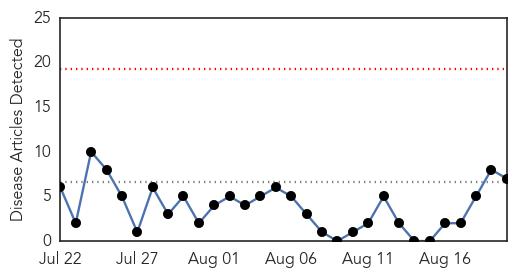
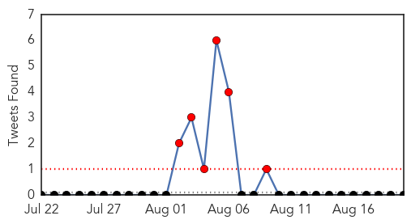
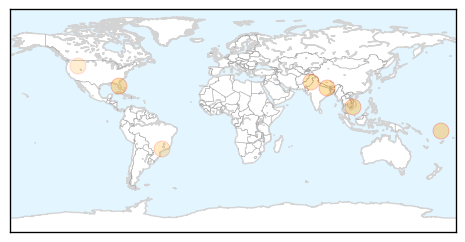
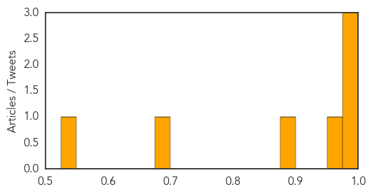
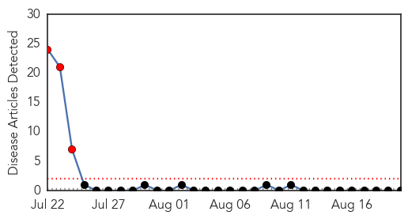

Dengue Fever
30-Day Web Trend
0 alerts, 0 warnings

30-Day Twitter Trend
7 alerts, 0 warnings

Article Locations
Article Confidences
Top Articles:
- 0.989
- Dengue rises, but government yet to wake up
- 0.987
- Costly cuts to mosquito monitoring
- 0.982
- Taiwan records year's first ...｜Society｜WCT
- 0.967
- Dengue fever on the rise in Vietnam
- 0.895
- Accelerating dengue surveillance and eradicating dengue larvae
- 0.681
- Killer Gene Solution to Deadly Mosquito-Borne Illnesses
- 0.546
- ‘Close down labs, hospitals that do not report malaria cases’
Top Tweets:
-
No tweets found for Aug 20, 2014
Bubonic Plague
30-Day Web Trend
3 alerts, 0 warnings

30-Day Twitter Trend
0 alerts, 0 warnings

Article Locations

Article Confidences

Top Articles:
-
No articles found for Aug 20, 2014
Top Tweets:
-
No tweets found for Aug 20, 2014